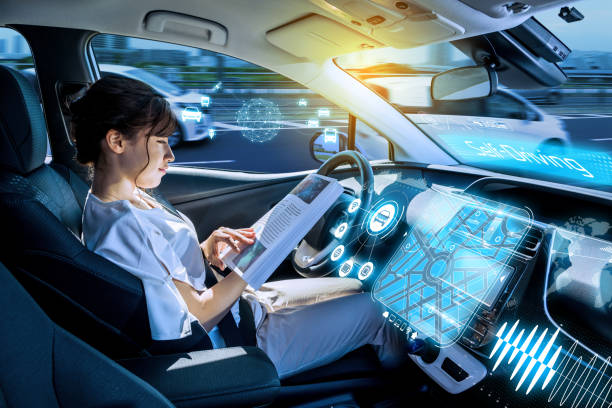

Vehículos Autónomos: El futuro de la movilidad inteligente
Los vehículos autónomos representan una revolución en el transporte, prometiendo mayor seguridad, eficiencia y accesibilidad en las ciudades del futuro.
¿Cómo funcionan los vehículos autónomos?
Utilizan una combinación avanzada de tecnologías para percibir su entorno, tomar decisiones y conducir sin intervención humana:
- Sensores: cámaras, radares, LIDAR y ultrasonidos para detectar obstáculos y peatones.
- Inteligencia Artificial: algoritmos que interpretan datos y planifican rutas seguras.
- Sistemas de navegación: mapas digitales y GPS de alta precisión.
Beneficios clave
- Reducción de accidentes: eliminan errores humanos, la causa principal de siniestros.
- Optimización del tráfico: mejor flujo vehicular y menos congestiones.
- Accesibilidad: facilitan movilidad para personas con discapacidad o sin licencia de conducir.
Desafíos y consideraciones
A pesar de su avance, estos vehículos enfrentan obstáculos importantes:
- Regulación: leyes y normas aún en desarrollo en muchos países.
- Seguridad informática: proteger los sistemas contra ciberataques.
- Aceptación social: confianza y adaptación de los usuarios.
Conclusión: Los vehículos autónomos están cambiando la manera en que pensamos el transporte, con un gran potencial para hacer nuestras ciudades más seguras y sostenibles.
Publicado el: 02/06/2025